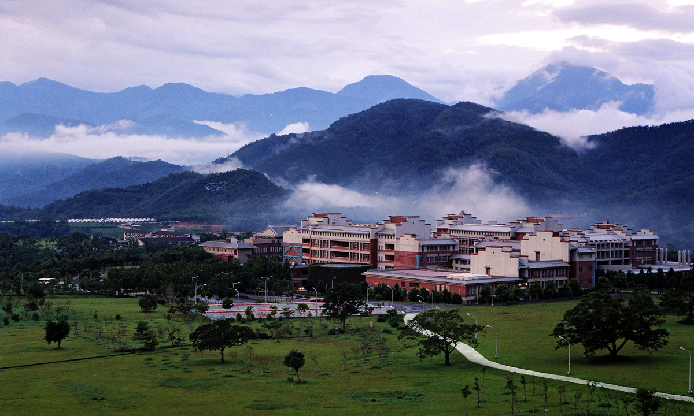

學校定位（範例2）
學校定位：「兼具國際思維與在地實踐的綜合型大學」
暨大於民國 84 年正式成立，創校之初，即以建設國際學術重鎮自期，建校目標，即著重「前瞻性與國際觀的培養」、「科技化與人文觀的平衡」、「發揚中華文化與強化僑教功能」三方面。致力培育師生寬廣心胸、恢弘器宇、能洞察世界潮流、願積極創新，且具前瞻性與國際視野。
運用暨大特色，優化僑教與國際化之推展，配合國家南向、新南向政策，本校於 103 年增設東南亞學系，是台灣第一個設立東南亞學系的大學，強調東南亞區域研究、產學合作及推廣服務、培育僑界人才等發展重點。延伸至歐美紐澳其它地區，招收高素質僑外生來校，並積極與世界一等人才交流。
本著「在地思考、在地觀察」的理念，同步發展社區關係，深耕在地連結，培育精英人才。積極省思大學在地社會責任，期望藉由扮演地方公共智庫與人才培育孵化器兩個角色，協力發展共學共工的「水沙連大學城」。
設校初期原設置人文學院、管理學院及科技學院等三學院；其後成立教育學院，並將通識教育中心的全人教育、跨域創新進行組織改造，設置成立水沙連學院，朝綜合大學的發展方向奠定基礎。
鑑於人口老化，未來長期照護更不可或缺，暨大再獲教育部核准新設護理暨健康福祉學院，與埔里基督教醫院以產學合作模式，112 年 8 月共同成立護理學系與護理學系原民專班。未來將提供病患與高齡者更專業的醫療與照護服務。
